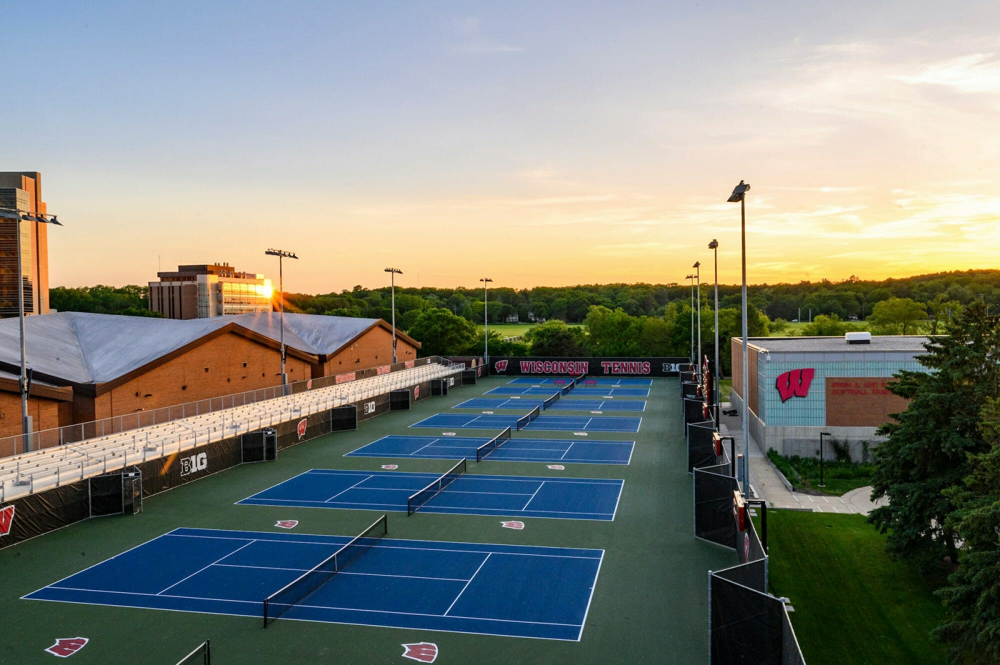

UW Tennis Carpool Optimizer
Title:
Python Developer
Date:
Spring 2025
Skills:
Python, Algorithm Design, Route Optimization, Automation
Summary:
Developed an automated carpool optimization system for UW Club Tennis to efficiently manage transportation for over 100 members. The program significantly reduced total driving distance and fuel consumption while streamlining the scheduling process.
Problem
As a member of UW Club Tennis, I noticed that our manual carpool scheduling system was inefficient and time-consuming. With over 100 members needing rides to practice, the process of matching drivers with passengers and creating optimal routes was becoming increasingly complex. This led to unnecessary detours, excessive fuel consumption, and significant time spent on administrative tasks.
Solution Approach
I approached this challenge by implementing a two-phase optimization algorithm:
- Passenger Grouping Phase
- Created a distance matrix between all passengers using Google Maps API
- Implemented a priority system based on club seniority
- Grouped nearby passengers while maintaining maximum car capacity of 4
- Designed overflow handling to identify bus riders when needed
- Driver Assignment Phase
- Generated a second distance matrix between drivers and all passengers
- Sorted and assigned drivers to passenger groups based on minimal distance
- Optimized for overall route efficiency across all vehicles
- Implemented capacity checks to ensure balanced distribution
- Data Management System
- Integrated with Google Sheets for automated form response collection
- Maintained separate worksheets for player info and daily ride requests
- Implemented data validation and error handling for member information
- Created organized output format for easy distribution of assignments
Technical Implementation
The core of the project was built in Python, utilizing several key components and APIs:
- Data Collection and Management
- Integrated with Google Sheets API using gspread for collecting member responses and storing player information
- Implemented automated form processing to handle daily ride requests and driver availability
- Used pandas DataFrames for efficient data manipulation and filtering
- Distance Calculation and Grouping Algorithm
- Utilized Google Maps API to calculate real-world distances between addresses
- Created a 2D adjacency matrix to store distances between all passengers
- Implemented a priority-based grouping system that considers club seniority
- Developed an efficient algorithm to group nearby passengers while maintaining group size limits
- Driver Assignment System
- Built a second distance matrix to optimize driver-to-group assignments
- Implemented a sorting algorithm to minimize total driving distance
- Created a flexible system to handle varying numbers of drivers and passengers
- Added overflow handling to identify bus riders when driver capacity is exceeded
- Integration and Security
- Used environment variables to securely manage API keys and credentials
- Implemented OAuth2 authentication for secure access to Google services
- Created a robust error handling system for missing or incorrect member information
Results and Impact
The implementation of this system led to several significant improvements:
- Efficiency Gains
- 30% reduction in total driving distance
- 25% decrease in fuel consumption
- 70% improvement in scheduling time efficiency
- User Experience
- Streamlined process for both administrators and members
- Increased satisfaction with carpool arrangements
- Reduced coordination overhead for team leadership
- Environmental Impact
- Reduced carbon footprint through optimized routes
- More efficient use of available vehicles
- Decreased overall environmental impact of team transportation
Future Improvements
While the current system has significantly improved our carpool management, there are several potential enhancements for the future:
- Integration with a user interface for real-time updates
- Machine learning implementation for better route prediction
- Enhanced visualization tools for route planning